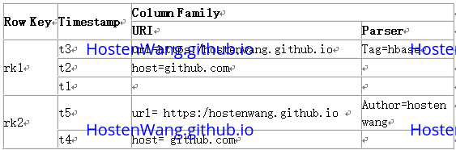

HBase 从入门到精通 - 概述 | HBase Beginner Guide - Data Model
概述|Overview
HBase – Hadoop Database，是一个高可靠性、高性能、面向列、可伸缩的分布式存储系统，利用HBase技术可在廉价PC Server上搭建起大规模结构化存储集群。
HBase是Google Bigtable的开源实现，类似Google Bigtable利用GFS作为其文件存储系统，HBase利用Hadoop HDFS作为其文件存储系统；Google运行MapReduce来处理Bigtable中的海量数据，HBase同样利用Hadoop MapReduce来处理HBase中的海量数据；Google Bigtable利用 Chubby作为协同服务，HBase利用Zookeeper作为对应。
HBase 数据模型
应用程序是以表的方式在Hbase存储数据的。表是由行和列构成的，所以的列是从属于某一个column family的。行和列的交叉点称之为cell,cell是版本化的。cell的内容是不可分割的字节数组。
表的row key也是一段字节数组，所以任何东西都可以保存进去，不论是字符串或者数字。Hbase的表是按key排序的，所以的表都必须要有key.
HBase Table

(行键)Row Key
Table的主键，Table中的记录按照Row Key排序
(时间戳)Timestamp
每次数据操作对应的时间戳，可以看作是数据的version number.
列簇(Column Family)
Table在水平方向有一个或者多个Column Family组成，一个Column Family中可以由任意多个Column组成，即Column Family支持动态扩展，无需预先定义Column的数量以及类型，所有Column均以二进制格式存储，用户需要自行进行类型转换。
HBase Table & Region
当Table随着记录数不断增加而变大后，会逐渐分裂成多份splits，成为regions，一个region由[startkey,endkey)表示，不同的region会被Master分配给相应的RegionServer进行管理：